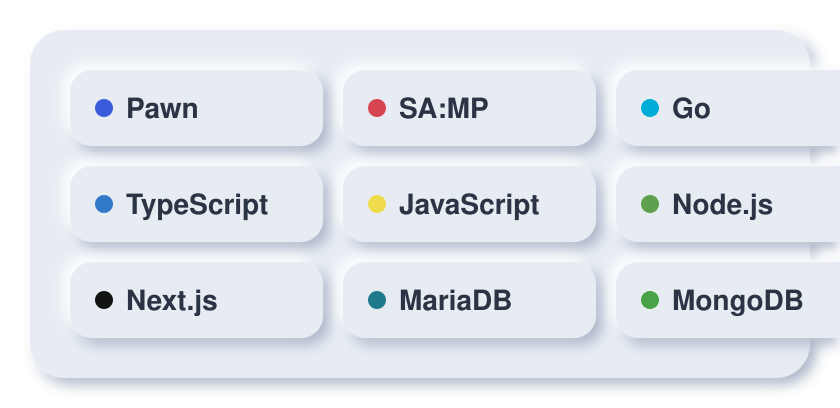

<div id="readme" class="md" data-path="README.md"><article class="markdown-body entry-content container-lg" itemprop="text"><div align="center" dir="auto">
  <themed-picture data-catalyst-inline="true"><picture>
    <source media="(prefers-color-scheme: dark)" srcset="./assets/hero-dark.svg">
    
  </picture></themed-picture>
</div>
<div align="center" dir="auto">
  <a href="https://www.youtube.com/@ndyy_208" rel="nofollow"></a>
    
  <a href="https://instagram.com/ndyndyy7" rel="nofollow"></a>
    
  <a href="https://github.com/ndyy2"></a>
    
  <a href="https://andypradana.my.id/" rel="nofollow"></a>
</div>
<div class="markdown-heading" dir="auto"><h2 class="heading-element" dir="auto">About</h2><a id="user-content-about" class="anchor" aria-label="Permalink: About" href="#about"><svg data-component="Octicon" class="octicon octicon-link" viewBox="0 0 16 16" version="1.1" width="16" height="16" aria-hidden="true"><path d="m7.775 3.275 1.25-1.25a3.5 3.5 0 1 1 4.95 4.95l-2.5 2.5a3.5 3.5 0 0 1-4.95 0 .751.751 0 0 1 .018-1.042.751.751 0 0 1 1.042-.018 1.998 1.998 0 0 0 2.83 0l2.5-2.5a2.002 2.002 0 0 0-2.83-2.83l-1.25 1.25a.751.751 0 0 1-1.042-.018.751.751 0 0 1-.018-1.042Zm-4.69 9.64a1.998 1.998 0 0 0 2.83 0l1.25-1.25a.751.751 0 0 1 1.042.018.751.751 0 0 1 .018 1.042l-1.25 1.25a3.5 3.5 0 1 1-4.95-4.95l2.5-2.5a3.5 3.5 0 0 1 4.95 0 .751.751 0 0 1-.018 1.042.751.751 0 0 1-1.042.018 1.998 1.998 0 0 0-2.83 0l-2.5 2.5a1.998 1.998 0 0 0 0 2.83Z"></path></svg></a></div>
<p dir="auto">I build clean, efficient, and modular backend systems, with a focus on
game-server logic and the tooling that keeps it maintainable.</p>
<ul dir="auto">
<li>🧠 Exploring backend technologies and new tooling</li>
<li>🎮 SA:MP game development and logic-driven systems</li>
<li>🔧 Clean architecture, automation, and low-level scripting</li>
</ul>
<div class="markdown-heading" dir="auto"><h2 class="heading-element" dir="auto">Tech Stack</h2><a id="user-content-tech-stack" class="anchor" aria-label="Permalink: Tech Stack" href="#tech-stack"><svg data-component="Octicon" class="octicon octicon-link" viewBox="0 0 16 16" version="1.1" width="16" height="16" aria-hidden="true"><path d="m7.775 3.275 1.25-1.25a3.5 3.5 0 1 1 4.95 4.95l-2.5 2.5a3.5 3.5 0 0 1-4.95 0 .751.751 0 0 1 .018-1.042.751.751 0 0 1 1.042-.018 1.998 1.998 0 0 0 2.83 0l2.5-2.5a2.002 2.002 0 0 0-2.83-2.83l-1.25 1.25a.751.751 0 0 1-1.042-.018.751.751 0 0 1-.018-1.042Zm-4.69 9.64a1.998 1.998 0 0 0 2.83 0l1.25-1.25a.751.751 0 0 1 1.042.018.751.751 0 0 1 .018 1.042l-1.25 1.25a3.5 3.5 0 1 1-4.95-4.95l2.5-2.5a3.5 3.5 0 0 1 4.95 0 .751.751 0 0 1-.018 1.042.751.751 0 0 1-1.042.018 1.998 1.998 0 0 0-2.83 0l-2.5 2.5a1.998 1.998 0 0 0 0 2.83Z"></path></svg></a></div>
<div align="center" dir="auto">
  <themed-picture data-catalyst-inline="true"><picture>
    <source media="(prefers-color-scheme: dark)" srcset="./assets/stack-dark.svg">
    
  </picture></themed-picture>
</div>
<div class="markdown-heading" dir="auto"><h2 class="heading-element" dir="auto">GitHub Stats</h2><a id="user-content-github-stats" class="anchor" aria-label="Permalink: GitHub Stats" href="#github-stats"><svg data-component="Octicon" class="octicon octicon-link" viewBox="0 0 16 16" version="1.1" width="16" height="16" aria-hidden="true"><path d="m7.775 3.275 1.25-1.25a3.5 3.5 0 1 1 4.95 4.95l-2.5 2.5a3.5 3.5 0 0 1-4.95 0 .751.751 0 0 1 .018-1.042.751.751 0 0 1 1.042-.018 1.998 1.998 0 0 0 2.83 0l2.5-2.5a2.002 2.002 0 0 0-2.83-2.83l-1.25 1.25a.751.751 0 0 1-1.042-.018.751.751 0 0 1-.018-1.042Zm-4.69 9.64a1.998 1.998 0 0 0 2.83 0l1.25-1.25a.751.751 0 0 1 1.042.018.751.751 0 0 1 .018 1.042l-1.25 1.25a3.5 3.5 0 1 1-4.95-4.95l2.5-2.5a3.5 3.5 0 0 1 4.95 0 .751.751 0 0 1-.018 1.042.751.751 0 0 1-1.042.018 1.998 1.998 0 0 0-2.83 0l-2.5 2.5a1.998 1.998 0 0 0 0 2.83Z"></path></svg></a></div>
<div align="center" dir="auto">
  <themed-picture data-catalyst-inline="true"><picture>
    <source media="(prefers-color-scheme: dark)" srcset="https://camo.githubusercontent.com/f6ca8d969fe74e80a1caa3e9e70083d3262e2f963aed5f2ec5a9bf502fefc821/68747470733a2f2f73747265616b2d73746174732e64656d6f6c61622e636f6d3f757365723d6e64797932267468656d653d6461726b26686964655f626f726465723d74727565266d6f64653d6461696c79266f726465723d332677696474683d343935266865696768743d313935" data-canonical-src="https://streak-stats.demolab.com?user=ndyy2&amp;theme=dark&amp;hide_border=true&amp;mode=daily&amp;order=3&amp;width=495&amp;height=195">
    
  </picture></themed-picture>
</div>
<div align="center" dir="auto">
  <a target="_blank" rel="noopener noreferrer nofollow" href="https://camo.githubusercontent.com/f6d0d78d4a76af191b9860b24eae0419a7329c7f8ff94a45021cf9167b3881e0/68747470733a2f2f6b6f6d617265762e636f6d2f67687076632f3f757365726e616d653d6e64797932"></a>
</div>
</article></div>